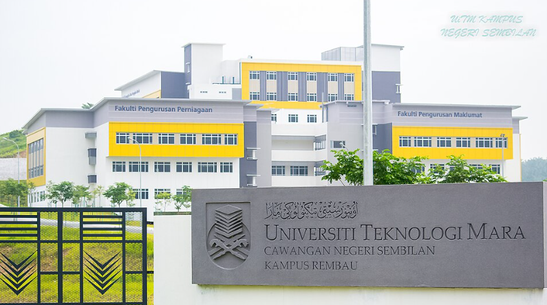

Current Education
Diploma in Information Management
Universiti Teknologi MARA (UiTM) Negeri Sembilan, Rembau Campus
- Institution: UiTM Negeri Sembilan
- Campus: Rembau Campus
- Faculty: Faculty of Information Science
- Program: Diploma in Information Management
- Current Semester: Semester 5 (Final)
- Class: CDIM1105D

UiTM Campus Environment
Information Management Course Overview 📚
I'm currently a student pursuing a Diploma in Information Management at Universiti Teknologi MARA (UiTM). Through this course, I've learned how to manage, organize, and handle information effectively using both technology and management skills.
Some of the key areas I've learned include:
Core Subjects Covered:
Information Organization
Information Systems
Data Management
Digital Communication
Key Learning Areas
- Information organization and classification
- Information systems and technology
- Record and data management
- Digital communication and information literacy
- Knowledge management and research skills
- Web content management
- Database management systems
- Networking fundamentals
Skills Developed Through Education 🛠️
Technical Skills
- HTML/CSS: Web development basics
- C++ Programming: Basic programming concepts
- Database Management: SQL and data organization
- Microsoft Excel: Data analysis and management
- Networking: Basic network concepts
Soft Skills
- Communication: Presenting and reporting
- Teamwork: Group projects and assignments
- Problem Solving: Analytical thinking
- Time Management: Meeting deadlines
- Research Skills: Information gathering
Current Academic Goal
Complete Diploma with excellent results and proceed to Degree program